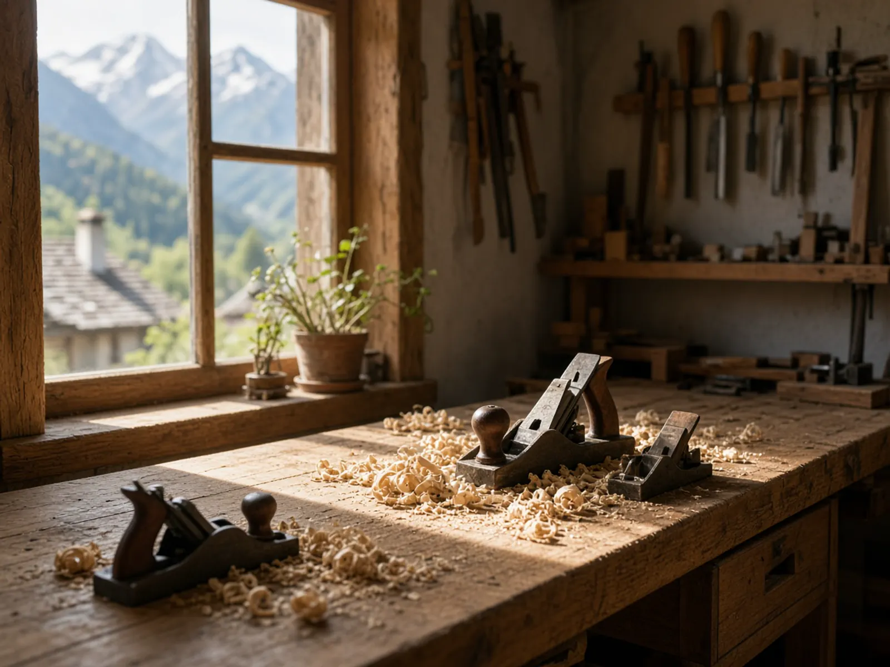
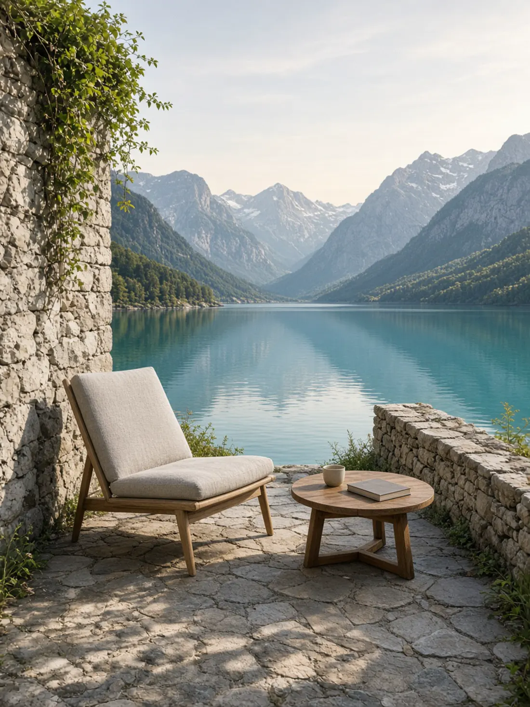

À propos
Bonjour, moi c'est Théo.
Je crée des sites pour les artisans, commerçants, indépendants et loueurs autour d'Annecy. Des sites simples, qui vous font gagner du temps et des clients.


Mon parcours
Automaticien de métier.
Dans la journée, je programme des automates et des systèmes de supervision pour des bâtiments : chauffage, froid, ventilation. Mon travail, c'est que tout marche tout seul, même quand personne n'est là.
Un bon site, c'est pareil. Il répond aux clients, prend les réservations et encaisse les paiements pendant que vous travaillez. Ou pendant que vous dormez. C'est de là que vient le nom : Ouvert.
J'ai commencé avec mon propre studio en location à Aix-les-Bains. Je voulais que les voyageurs puissent réserver en direct, sans commission. Alors j'ai fait le site moi-même : calendrier, paiement en ligne, mails de confirmation, espace client.
Aujourd'hui, je fais la même chose pour d'autres pros. Que vous ayez besoin d'une simple page pour être trouvé, ou d'un site qui prend les réservations, je vous propose ce qui est utile pour vous. Pas plus.
Voir le site de mon studioEn bref.
- Nom
- Théo Bonaventure
- Basé
- Près d'Annecy, Haute-Savoie
- Zone
- Haute-Savoie, et à distance partout en France
- Métier
- Automaticien en bâtiment
- Statut
- Entrepreneur individuel
- Contact
- contact@studio-ouvert.fr
Ma façon de travailler.
- 01
Des mots simples
Pas de jargon. Je vous explique ce que je fais et pourquoi, avec des mots normaux.
- 02
Des prix clairs
Les tarifs sont affichés sur le site. Vous savez ce que vous payez avant de commencer.
- 03
Des choses qui marchent
Je préfère un site simple qui fonctionne à un site compliqué. Je teste tout avant la mise en ligne : formulaires, paiements, mails.
- 04
Je reste joignable
Après la mise en ligne, vous savez qui contacter. C'est moi qui ai fait le site, c'est moi qui le suis.
On en parle 20 minutes ?
C'est gratuit et sans engagement. Vous repartez avec des idées claires pour votre site.